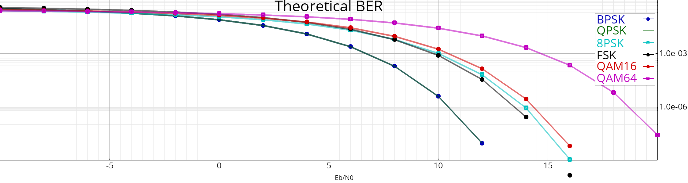

Calcul de ber théoriques
Dans cet exemple on compare les taux d'erreurs binaire de différentes formes d'onde, en fonction du SNR normalisé (Eb/N0).
Figure exemple_ber_theo()
{
soit n = 16;
soit ebn0 = linspace(-10, 20, n),
ber_bpsk = forme_onde_psk(2)->ber(ebn0),
ber_qpsk = forme_onde_psk(4)->ber(ebn0),
ber_8psk = forme_onde_psk(8)->ber(ebn0),
ber_qam16 = forme_onde_qam(16)->ber(ebn0),
ber_qam64 = forme_onde_qam(64)->ber(ebn0),
ber_fsk = forme_onde_fsk(2, 0.5)->ber(ebn0);
Figure f;
f.titres(cutils::locale::est_fr() ? "BER théoriques" : "Theoretical BER" , "Eb/N0" );
f.plot(ebn0, ber_bpsk, "b-o" , "BPSK" );
f.plot(ebn0, ber_qpsk, "g-" , "QPSK" );
f.plot(ebn0, ber_8psk, "c-s" , "8PSK" );
f.plot(ebn0, ber_fsk, "k-o" , "FSK" );
f.plot(ebn0, ber_qam16, "r-o" , "QAM16" );
f.plot(ebn0, ber_qam64, "m-s" , "QAM64" );
f.axes().def_echelle( "lin" , "log" );
f.def_rdi({-10, 1e-9, 30, 1});
retourne f;
}
